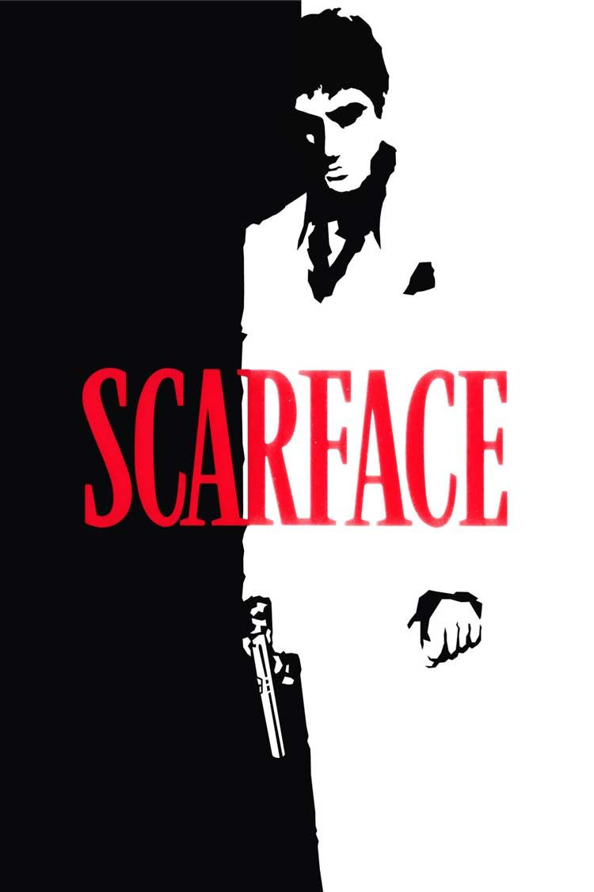
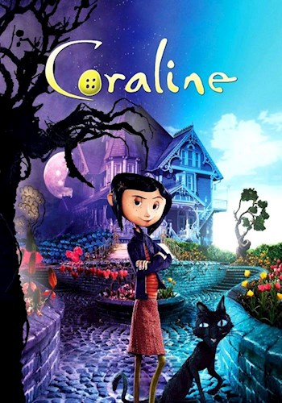

En una Gran Bretaña del futuro cercano, el joven Alexander DeLarge y sus amigos se divierten golpeando y violando a quien les place. Cuando no está destruyendo vidas ajenas, Alex se deleita con la música de Beethoven. El estado, deseoso de combatir la delincuencia juvenil, le ofrece a Alex, encarcelado, la opción de someterse a un procedimiento invasivo que le privará de toda autonomía personal. En una época donde la conciencia es un bien preciado, ¿podrá Alex cambiar de opinión?
Calificación: 5/5 ★
Scarface
Brian de Palma, 1983

Tras obtener una tarjeta de residencia a cambio de asesinar a un funcionario del gobierno cubano, Tony Montana se adueña del narcotráfico en Miami. Asesina brutalmente a cualquiera que se interponga en su camino, y con el tiempo, Tony se convierte en el mayor narcotraficante del estado, controlando casi toda la cocaína que pasa por Miami. Pero la creciente presión policial, las guerras con los cárteles colombianos y su propia paranoia, alimentada por las drogas, alimentan las llamas de su eventual caída.
Cuatro talentosos músicos alienígenas son secuestrados por un productor discográfico que los disfraza de humanos. Shep, un piloto espacial enamorado de la bajista Stella, los sigue a la Tierra. Reprogramados para olvidar sus verdaderas identidades y renombrados como The Crescendolls, el grupo rápidamente se convierte en un gran éxito tocando pop corporativo sin alma. En un concierto, Shep logra liberar a todos los músicos excepto a Stella, y la banda emprende la búsqueda de redescubrir quiénes son realmente — y rescatar a Stella.
Calificación: 5/5 ★
Coraline
Henry Selick, 2009

Deambulando por su vieja y destartalada casa en su aburrido nuevo pueblo, Coraline, de 11 años, descubre una puerta oculta que la lleva a una versión extrañamente idealizada de su vida. Para permanecer en la fantasía, debe hacer un sacrificio aterradoramente real.
Calificación: 5/5 ★
Lilo & Stitch
Chris Sanders, Dean DeBlois, 2002
Mientras Stitch, un experimento genético fugitivo de un planeta lejano, causa estragos en las islas hawaianas, se convierte en el travieso "cachorro" extraterrestre adoptado de una niña independiente llamada Lilo y aprende sobre la lealtad, la amistad y la 'ohana, la tradición hawaiana de la familia.